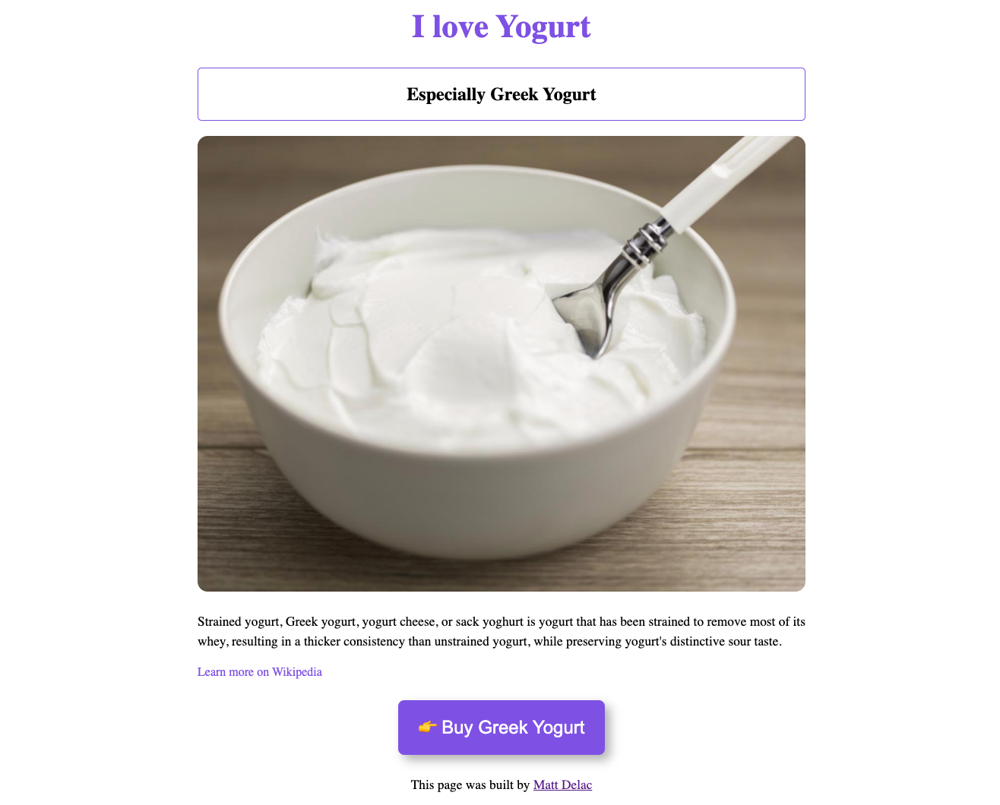
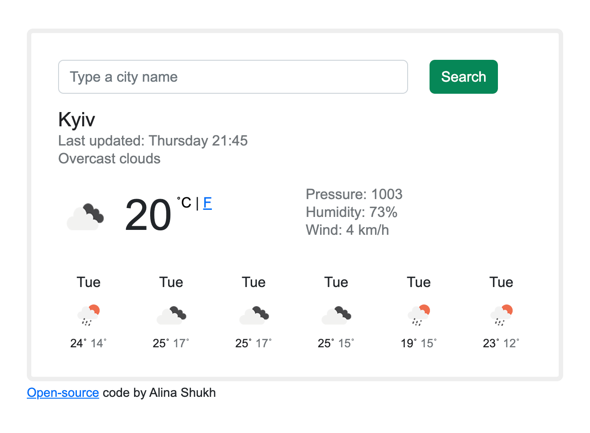
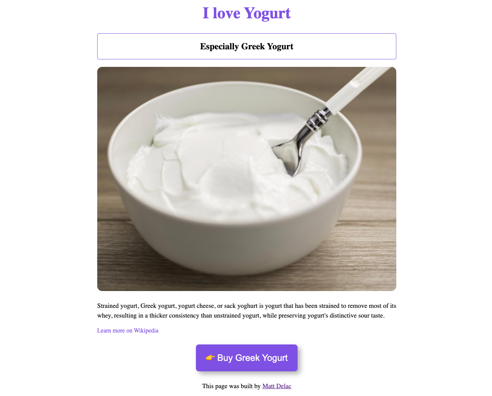
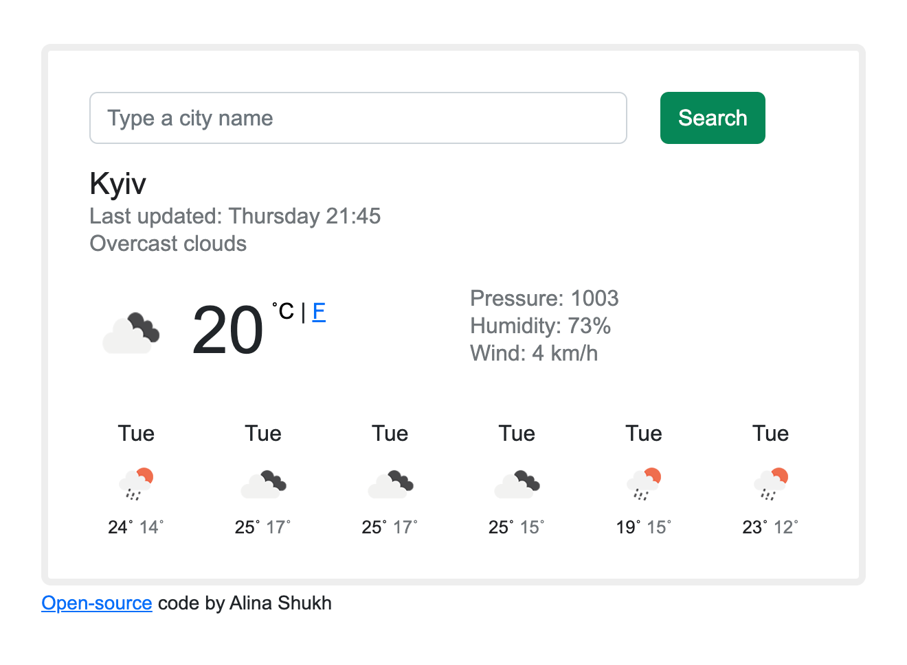

About me
🇺🇦 Front-end developer from Kyiv, Ukraine
The old posters and signs in the traditional Montserrat neighborhood of Buenos Aires inspired Julieta Ulanovsky to design this typeface and rescue the beauty of urban typography that emerged in the first half of
 


